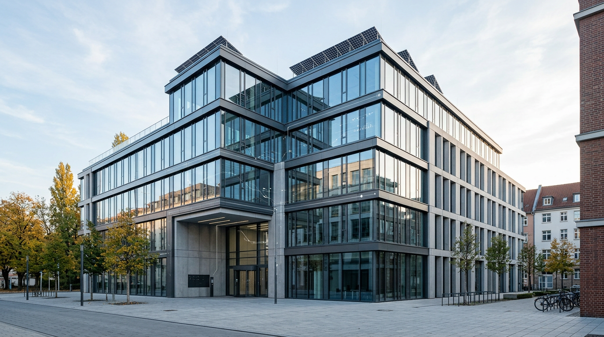

ISO 50001 Gebäude Energiemanagement: Was sich 2026 ändert

TL;DR
Die revidierte ISO 50001 Norm bringt ab 2026 signifikante Änderungen für Gebäudebetreiber. Der Fokus verschiebt sich stärker auf strategische Energieziele, die Integration von erneuerbaren Energien und digitalisierte Prozesse, was eine proaktive Anpassung der Energiemanagementsysteme erfordert.
Die Norm ISO 50001, ein internationaler Standard für Energiemanagementsysteme, steht vor einer bedeutenden Überarbeitung. Ab 2026 werden sich die Anforderungen für Gebäudebetreiber im DACH-Raum ändern, was eine Anpassung bestehender Managementsysteme notwendig macht.
Hintergründe der Normüberarbeitung 2026
Die revidierte ISO 50001 zielt darauf ab, die Effektivität von Energiemanagementsystemen weiter zu steigern und den sich wandelnden Herausforderungen im Energiebereich Rechnung zu tragen. Der Fokus liegt stärker auf der strategischen Verankerung von Energieaspekten in der Gesamtorganisation. Dies schließt eine intensivere Berücksichtigung von Klimazielen und die Förderung einer nachhaltigen Energienutzung ein.
Besonders für Gebäudebetreiber bedeutet dies eine Neuausrichtung von Prozessen und eine stärkere Integration von Energiemanagement in das Kerngeschäft. Die gestiegenen Anforderungen an Transparenz und Berichterstattung, insbesondere im Hinblick auf den Einsatz erneuerbarer Energien und die Reduktion von Treibhausgasemissionen, sind zentrale Treiber der Überarbeitung.
Neue Schwerpunkte für Gebäudemanagement
Mit der Überarbeitung der ISO 50001 werden die Anforderungen an das Energiemanagement in Gebäuden verstärkt. Dies umfasst eine detailliertere Betrachtung der energieleistungsbezogenen Informationen. Gebäudebetreiber müssen ihre energetischen Ausgangsbasen (EnBAs) und die zur Ermittlung relevanten Kennzahlen (KPIs) präziser definieren und kontinuierlich überwachen.
Ein wesentlicher Aspekt wird die stärkere Betonung der strategischen Energieziele sein. Diese müssen nicht nur auf die Reduktion des Energieverbrauchs abzielen, sondern auch die Maximierung der Nutzung erneuerbarer Energien und die Senkung des CO2-Fußabdrucks umfassen. Die Integration von dezentralen Energieerzeugungssystemen und Speichern wird somit eine größere Rolle spielen.
- Erweiterte Berücksichtigung von Treibhausgasemissionen, nicht nur reiner Energieverbrauch.
- Stärkere Fokussierung auf den Einsatz und die Integration erneuerbarer Energiequellen.
- Flexiblere Gestaltung der energieleistungsbezogenen Ausgangsbasen zur besseren Abbildung komplexer Gebäudeenergiesysteme.
- Erhöhte Anforderungen an die Kommunikation und das Engagement der obersten Leitung im Bereich Energiemanagement.
Auswirkungen der Digitalisierung und neuer Technologien
Die Digitalisierung spielt eine Schlüsselrolle bei der Umsetzung der revidierten ISO 50001. Fortschrittliche Sensorik, IoT-Plattformen und Datenanalyse-Tools ermöglichen eine granularere Erfassung von Verbrauchsdaten und eine präzisere Identifizierung von Einsparpotenzialen. Gebäudebetreiber, die bereits in moderne Gebäudeleittechnik (GLT) und Energiemanagementsysteme (EMS) investiert haben, werden von diesen Entwicklungen profitieren.
Die Norm fordert eine stärkere Integration digitaler Lösungen zur Überwachung und Steuerung von Energieverbräuchen. Dies reicht von einem automatisierten Monitoring der Heizungs-, Lüftungs- und Klimatechnik (HLK) bis hin zur intelligenten Laststeuerung in Spitzenlastzeiten. Die Möglichkeit, Verbrauchsdaten in Echtzeit zu analysieren und darauf basierend Optimierungsmaßnahmen abzuleiten, wird essenziell.
Praktische Umsetzungsschritte für Gebäudebetreiber
Für Gebäudebetreiber im DACH-Raum ist es ratsam, die kommenden Änderungen proaktiv anzugehen. Eine frühzeitige Analyse der bestehenden Energiemanagementsysteme im Hinblick auf die neuen Anforderungen ist unerlässlich. Dies beinhaltet die Überprüfung der aktuellen KPIs, die strategische Einbettung von Energiezielen und die Bewertung der digitalen Infrastruktur.
Konkret sollten Unternehmen beginnen, ihre Datenstrategie im Energiebereich zu schärfen. Das Sammeln und Auswerten von Verbrauchsdaten auf einer detaillierteren Ebene wird wichtiger, um die neuen Kennzahlen abbilden zu können. Auch die Schulung von Personal und die Sensibilisierung aller Beteiligten für die neuen Schwerpunkte sind wichtige Meilensteine. Eine Zusammenarbeit mit spezialisierten Anbietern von Energiemanagementlösungen kann hierbei unterstützen.
- Überprüfung und Anpassung der energieleistungsbezogenen Ausgangsbasen (EnBAs).
- Definition und Implementierung neuer KPIs, die den Fokus auf erneuerbare Energien und CO2-Reduktion widerspiegeln.
- Bewertung und gegebenenfalls Ausbau der digitalen Erfassungs- und Steuerungstechnik.
- Strategische Neuausrichtung der Energieziele im Einklang mit Unternehmens- und Klimazielen.
- Schaffung eines Bewusstseins für die neuen Anforderungen im gesamten Unternehmen.
Förderlandschaft und wirtschaftliche Anreize
Die Anpassung an die revidierte ISO 50001 kann durch bestehende und zukünftige Förderprogramme im DACH-Raum unterstützt werden. Programme zur Energieeffizienz, zur Nutzung erneuerbarer Energien oder zur Digitalisierung von Gebäudemanagementsystemen bieten finanzielle Anreize. Bauherren, Asset Manager und Facility Manager sollten sich über aktuelle Fördermöglichkeiten informieren, um die Investitionen in neue Systeme und Prozesse zu optimieren.
Studien von Institutionen wie der Deutschen Energie-Agentur (dena) oder Fraunhofer zeigen regelmäßig das erhebliche Einsparpotenzial durch professionelles Energiemanagement. Die Implementierung der ISO 50001-konformen Maßnahmen kann nicht nur zu direkten Kosteneinsparungen von schätzungsweise 5-15 % bei den Energiekosten führen, sondern auch die Wettbewerbsfähigkeit steigern und die Attraktivität für Investoren erhöhen.
Häufige Fragen
Was ist die ISO 50001?
Die ISO 50001 ist ein internationaler Standard, der Anforderungen an ein zertifizierbares Energiemanagementsystem (EnMS) festlegt. Er hilft Organisationen, ihren Energieverbrauch systematisch zu erfassen, zu steuern und zu verbessern.
Welche Hauptänderungen bringt die Revision 2026?
Die überarbeitete Norm legt einen stärkeren Fokus auf strategische Energieziele, die Integration erneuerbarer Energien, die Reduktion von Treibhausgasemissionen und die Nutzung digitaler Technologien zur Effizienzsteigerung.
Muss mein Unternehmen die Zertifizierung neu durchlaufen?
Ja, nach Inkrafttreten der revidierten Norm müssen Organisationen ihre bestehenden Managementsysteme an die neuen Anforderungen anpassen. Dies erfordert in der Regel eine Re-Zertifizierung oder eine gezielte Überprüfung und Anpassung des bestehenden Systems.
Welche Rolle spielt Digitalisierung in der neuen Norm?
Die Digitalisierung wird explizit gefördert. Moderne Technologien wie IoT-Sensoren, Datenanalyseplattformen und intelligente Steuerungssysteme werden als wichtige Werkzeuge zur Optimierung des Energiemanagements in Gebäuden betrachtet.
Gibt es konkrete Umsetzungsfristen für die neue Norm?
Die genauen Fristen für die Umstellung werden mit der Veröffentlichung der finalen Norm bekannt gegeben. Es ist jedoch üblich, dass nach der Veröffentlichung eine Übergangsfrist von etwa zwei bis drei Jahren eingeräumt wird, bis die alte Norm-Version ihre Gültigkeit verliert.